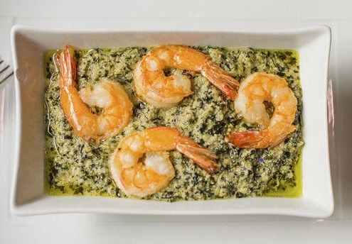

Ndole

Description
Le ndolé est le nom camerounais de variétés alimentaires de Vernonia.
Il s'agit d'un plat préparé à base d'une plante légumière dont
les feuilles sont consommées vertes, mais aussi dans une moindre mesure séchées.
Ingredients
- Les feuilles de ndole
- Arachides
- Oignons
- Ail
- Piment
- Sel
- Crevettes
- Poivre
- Huile Mayor
Recette
- Bien laver les feuilles de Ndolé après les avoir bouillies
- Tremper les arachides
- Enlever la peau et les écraser avec l'oignon, l’ail, le poivre et le piment.
- Une fois écrasés, il faut les verser dans la marmite pour la cuisson, laisser bien cuire les arachides.
- Mettre le ndole et bien tourner, ainsi que les crevettes écrasées
- Ajouter le sel
- Faire frire l'oignon dans l'huile et verser au dessus